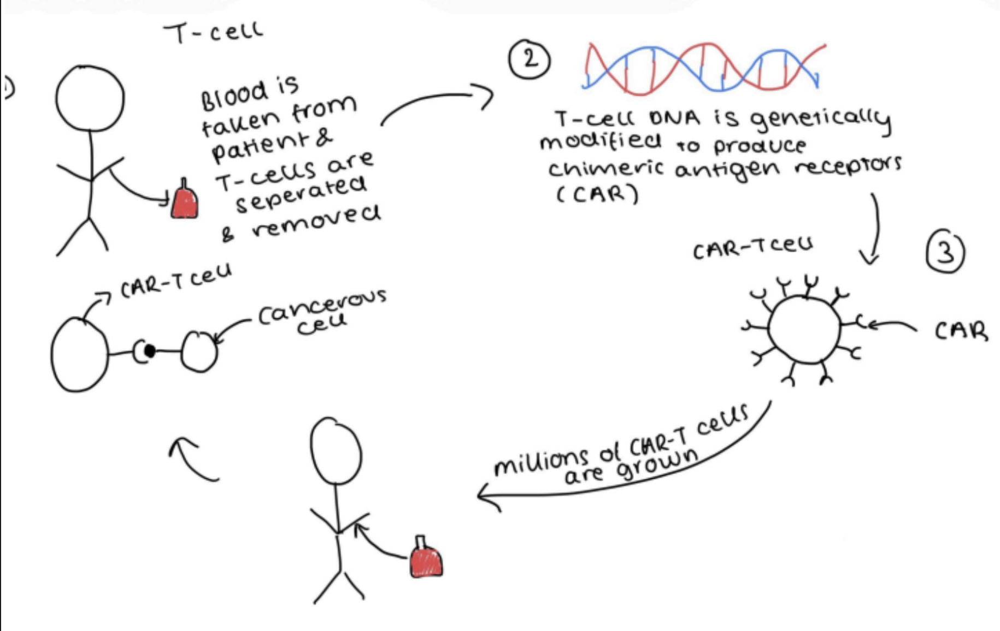

Medicine • Immunology
A living drug: how CAR-T therapy is rewriting the future of cancer
It's a known fact that 1 in 2 of us will get cancer during the course of our lives. It's a deadly disease killing around 150,000 people a year in the uk alone. So what's the solution? CAR-T therapy is a rapidly advancing immunotherapy that has had success in treating blood cancer.
What is CAR-T therapy and how does it work?
CAR-T defines a current and exciting development in clinical studies regarding cancer..
CAR-T therapy effectively turns a patient's own immune cells into a targeted weapon against cancer.
Rather than administering a traditional drug, this approach engineers the body’s natural defenses to seek out and destroy cancerous cells. As the ‘living drug’ comes from the patient it is personalised and can stay in the body for a long period of time preventing relapse.
T-cells research
CAR-T therapy stands for chimeric antigen receptor t-cell therapy and to understand how this innovative therapy works it's important that we analyse the function of t-cells in human bodies.
T-cells are cells that work in your immune system, they fight germs and prevent you from catching diseases. When you come into contact with a new infection or disease the body generates specific t-cells to combat them and keep some as reserves to remain in your body ready to fight the infection off if it returns.T-cells have antigen receptors on their surface which can only bind with a complementary antigen, like a jigsaw puzzle. So we need to engineer the perfect antigen receptor to bind onto cancerous cells without harming normal cells. This is why scientists produce chimeric antigen receptors (CAR).
Defining the Process

Blood is withdrawn from the patient and t-cells are separated. From there, it's sent to a treatment manufactures lab where scientists genetically engineer ( by adding a gene ) the t-cells to produce CARs - chimeric antigen receptors - which are complementary to the CD19 antigen found on acute lymphoblastic leukemia cells (blood cancer). Not only does CARs enable the T-cell to attach to cancerous cells but it also enhances the T-cell's ability to kill cancer cells.
The CARs consists of multiple molecules to ensure it carries out its job such as ; ectodomain, the main part of the molecule , which detects the antigens on the cancerous cells.
Additionally CARs contain endodomain which is like the on/off switch of the receptor, it signals when to activate the cell and when to make more of the CAR-T cell once in the body.
After t-cells become CAR-t cells, specialists expand the modified T-cell to create hundreds of millions of them , which is the final CAR-T cell product. In some recent clinical trials scientists have experimented using optogenetics ( shining light on a genetically moderated cell) and this can provide more stability and make cells safer. Final CAR-T cell product is sent back to the hospital..
Before the patient receives the infusion, they must undergo a short round of chemotherapy -called lymphodepleting- killing cells in the immune system( t-cells) to make room for the CAR-T cells allowing them to multiply effectively in the body.
Case stories
In 2012 six year old Emily Whitehead had acute lymphoblastic leukaemia. After over a year of chemotherapy treatments the cancer relapsed and the doctors said she had little time left. Emily joined the immunotherapy clinical trial led by Dr Carl June, and underwent CAR-T therapy. Emily’s cancer went into complete emission immediately and after over a decade later the cancer has not relapsed.
In 2015 1-year-old girl Layla was diagnosed with acute lymphoblastic leukemia like Emily, all treatment, including a bone marrow transplant, failed and her cancer was aggressive. Only 25% of infants survive aggressive acute lymphoblastic leukaemia. After CAR-T layla is cancer free without relapse.
Conclusions
Drawbacks
Currently the cost of this treatment is very expensive and approximately £282,000 per patient. This is due to the large scale manufacturing process which is around 70% of the cost.
Alongside this, there are many possible side effects such as cytokinesis release syndrome where a patient's other immune cells are triggered causing a full body inflammatory response, which could be fatal.
Why CAR-T therapy is needed
Car-T therapy currently is only used as a last resort, when a patient has undergone rounds of chemo with little to no progression. As of now, CAR-T is used to treat acute lymphoblastic leukaemia which is the most common childhood cancer. This is beneficial as CAR-T therapy has less strain on the body than a stem cell transplant or chemotherapy meaning young children have a better chance of recovery.